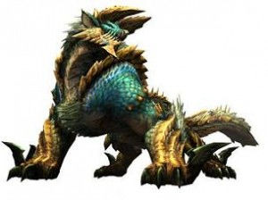

モンスター紹介
リオレウス
火球を吐き、空中からの連射も行う。飛行中の空気抵抗を減らすために背中の毒棘は無いが足の鉤爪に毒があり、発達した飛行能力を活かした空中からのホバリングしながらの急降下攻撃は、毒と気絶の効果を同時発揮する。
攻撃力が高く、エリア移動を頻繁に行ったり空中によく飛んだりするため慣れないうちは苦戦を強いられる。
ディアブロス
特殊なブレスは吐かず、強烈な突進攻撃や咆哮、砂中からの奇襲攻撃を得意とする。プライドが高く、縄張りに外敵が侵入すると積極的に攻撃してくる。また、怒ると手がつけられないほど凶暴になり、傷を負うごとにその頻度は増す。
ナルガクルガ
樹海に生息する、独特の進化を遂げた飛竜種で夜行性、好戦的な性格で、執拗かつ狡猾な戦い方を好む。しなやかで俊敏な身のこなしが可能。遠方から一瞬で跳びかかってきたり、突然跳躍しての視界から消えるといった動きで相手を撹乱する。
イャンクック
聴覚が発達しているが、それ故に、間近で大きな音を鳴らされると気絶したような状態になる。気絶させられると怒る。戦闘時には高熱を帯びた液体を吐いて攻撃して来るが、飛竜として見ると小型で体力も少なく、攻撃力も高くない。そのため初心者ハンターにとっては最初の大型モンスター討伐の目標となることが多く、今後のハンター生活の登竜門となる。
イャンガルルガ
尻尾の先端には猛毒を持つ。嘴を用いたついばみ攻撃に加え、サマーソルトや炎のブレスの3連射など、イャンクックとリオレイアを掛け合わせたようなモーションを繰り出す。動きが軽快ながらも、全身の甲殻が非常に硬くて生半可な攻撃は容易く弾いてしまう。知能が高く、ブレスの射程から逃げようとするハンターに対して、ブレスを目の前の地面に向かって撃つことで爆発に巻き込ませようとする行動も見られる。
ティガレックス
怒り状態になると目が赤くなり、さらに頭部と前脚に赤い模様が浮かび上がり攻撃力が上昇するが、肉質が柔らかくなり防御力は下がる。性質は非常に凶暴で、発達した四肢、爪、顎を用いて攻撃する。前脚を軸に、高速で旋回といった動作も可能。肉弾戦を含めて攻撃の殆どが龍属性を帯びる。ブレスによる攻撃はせず、岩をぶつけることで遠距離攻撃を行う。
ガノトトス
巨体によるパワーとタフネスは地上でも強力な武器となる。水中や遠距離からは口から強力な水流ブレスを吐くほか、トビウオのように滑空しながら睡眠作用のある毒を持つヒレで斬り付ける。
大きな音が苦手で、音爆弾を投げると驚いて飛び出してくる。
ラギアクルス

体内に発電器官を持ち、背中にある水晶状の突起物は背電殻と呼ばれており、これに蓄電させてから攻撃を行う。口からは球体状の電気ブレスを放つが、放電攻撃はスタミナを大幅に消耗する行動であるため、使い続けるとすぐに疲労してしまう。疲労すると休息のために陸に上がり、水中とは行動パターンが変化する。
イビルジョー
攻撃力が高く、肉弾戦のほか、赤黒い稲妻を纏ったガス状の龍属性ブレスを吐いたり、顎で地面の一部を抉り、場所によっては属性やられが付加される岩塊を飛ばす攻撃をしてくる。体力が減ると口からこぼれ出す唾液は強酸であり凄まじい腐食性・溶解性を持ち、触れるだけでハンターの防御力を低下させる（この唾液もMHP3以降は腐食性を利用する武具素材として扱われる）。G級のイビルジョーは、さまざまな攻撃の後に右足の叩きつけを頻繁に行うようになる。
ブラキディオス
腕と頭に蛍光色の粘菌を付着させていて、この粘菌はブラキディオス本体から離れると一定時間で爆発する性質があり、殴りつける際にこの粘菌を相手に擦り付け、爆発による追加ダメージを与える。その威力は驚異的で、アグナコトルすらも粘菌の爆破で沈黙させるほど。定期的に腕を舐めまわす動作を行うが、これはブラキディオスの唾液に粘菌を活性化させる成分が含まれているためとされ、実際にもこの動作後は腕の粘菌が増殖する。
ナバルデウス

口からは大量の海水を吸い込んで圧縮して帯状の水流にし吐き出し、「激流ブレス」という流攻撃として用いる。この際、水を飲み込むため大きく仰け反るモーションを起こす。
ゴグマジオス
シャガルマガラと酷似した骨格を持ち、同様に翼が第5・6の脚となっている6本脚の古龍。だが、立ち上がると数十メートルの高さがある城壁を優に超えるという超巨大モンスターであり、巨体のためか翼脚の飛膜も退化しかけて骨組みのような外見となっている。ただし飛行能力は健在であり、いざという時は自在に宙を舞う事が可能で、翼による飛行を行うモンスターでは現在最大のものである。後述する背中の撃龍槍の件ように数十年前から活動していたモンスターであるが、目撃例はおろか伝承等でも情報が無かった謎の多い存在である。
ジンオウガ

爪による攻撃やタックルなどの強靭な前足での連続攻撃や、空中で宙返りしつつし尻尾を叩きつけるといった自身の体を駆使した攻撃に加え、雷光虫を飛ばしたり、遠吠えしながら雷光虫を体に纏い、放電しながら「超帯電状態」に移行する（遠吠えの際は攻撃を当て、怯ませる事で妨害可能）等、トリッキーな攻撃方法も得意とする。ちなみに超帯電状態時は圧倒的なその攻撃性の代償として、肉質が軟化するという弱点をもつ。
シャガルマガラ
シナト村で禁断の地と呼ばれている地域、「禁足地」に生息する古龍。身体は特徴的な輝きを放つ純白色をしている。「狂竜ウイルス」と呼ばれる正体不明の物質を操る能力が備わっており、物質を吸引した生物は運動能力の異常と共に常軌を逸した凶暴化をもたらす効果がある。四肢とは別にある翼は、「翼脚」と呼ばれる飛行だけでなく歩行や物を掴むことに用いることが可能な強靭なものとなっており、走行時は翼脚も用いて六本脚で移動する。村クエストのストーリーにおける最終ボスであり、全ての発端とも言える古龍。